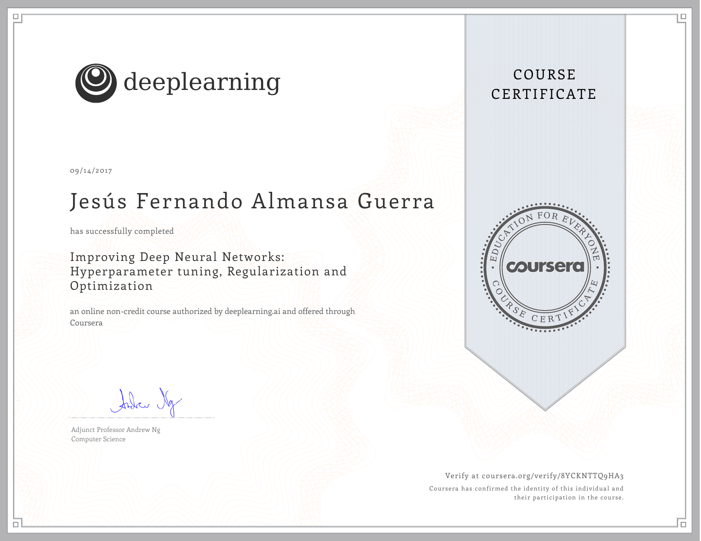
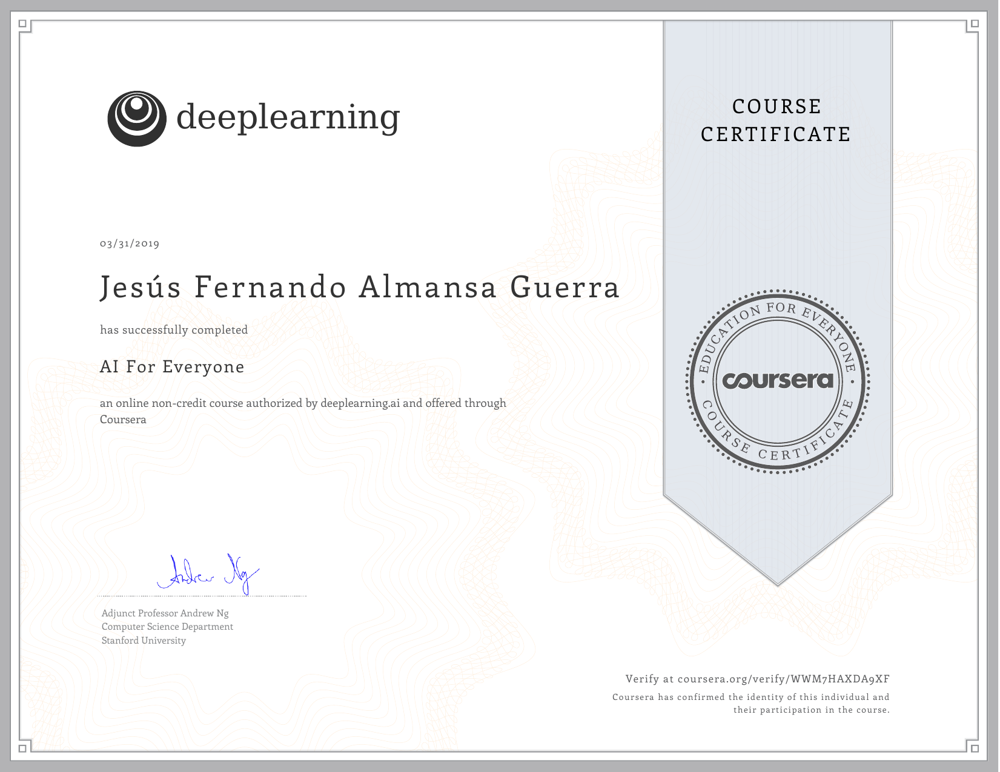
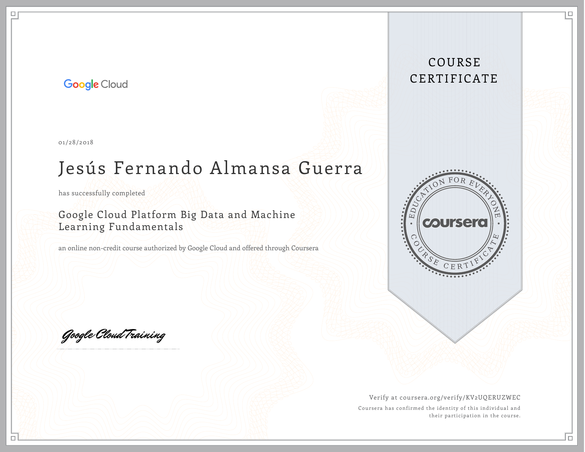
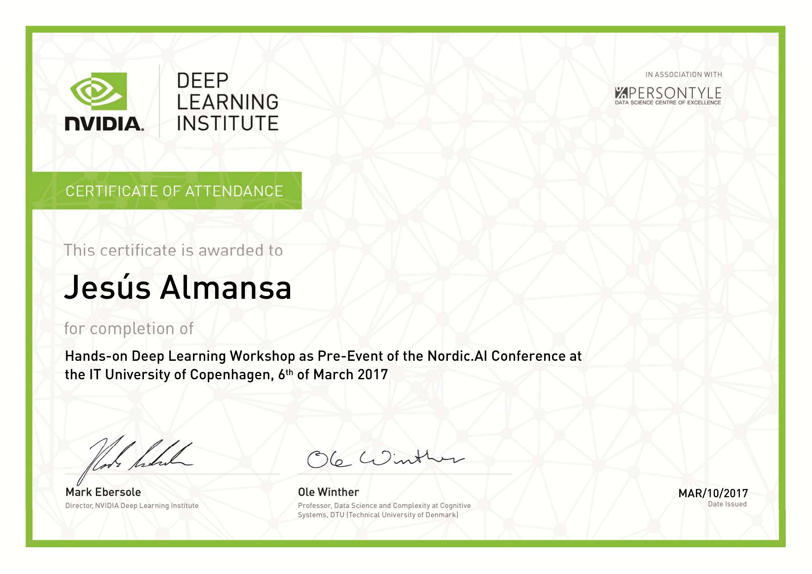
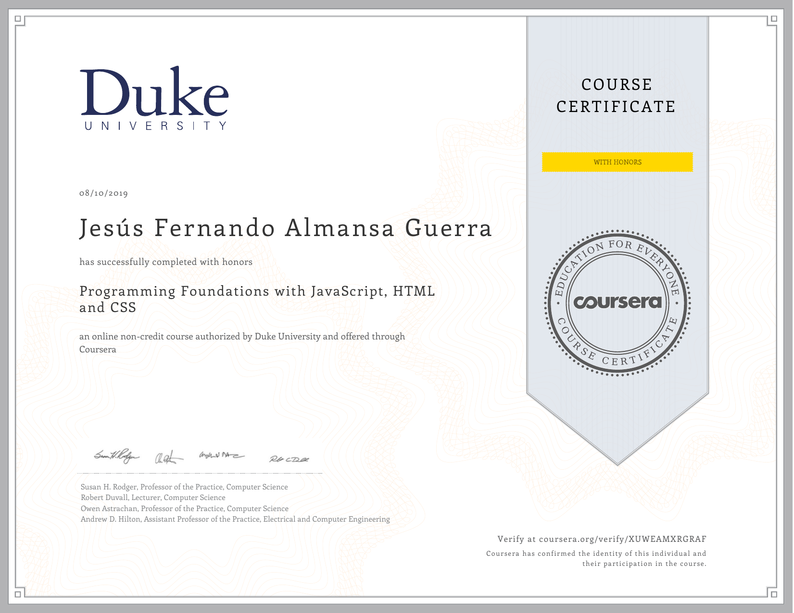

Competencies
JavaScript, Matlab, Python, Scala;
TensorFlow (1.0/2.0), Keras;
Scalding, Spark;
Airflow, Git, Jenkins;
MapInfo, QGIS;
CSS, HTML, XML.
Upgrade Courses
Deep Learning Specialization

deeplearning.ai
Coursera
AI for Everyone

deeplearning.ai
Coursera
Serverless Machine Learning with Tensorflow on Google Platform
 Google Cloud Training
Google Cloud Training
Google Cloud
Google Cloud Platform Big Data and Machine Learning Fundamentals

Google Cloud Training
Google Cloud
Hands on Deep Learning Workshop

NVIDIA Deep Learning Institute
NVIDIA
Data Analysis with Python
Lynda.com
LinkedIn
Programming Foundations with JavaScript, HTML and CSS

Duke University
Coursera
Education and Experience
Data Scientist/Engineer
LiveIntent
( Denmark, aug2018 - present )
Duties: development of ETL tasks using Scalding and Spark on top of Scala; pipeline monitoring based on Airflow; ad-hoc data analyses based on AWS Athena, Google BigQuery and Python.
Gains: learned technology stack; participated in all stages of development (requirement analysis, coding, testing, deployment, maintenance and reporting); project management using Jira; attended status meetings.
Intern
DHI GRAS
( Denmark, mar2017 - jun2017 )
Duties: implemented a ConvNet for impervious surface mapping using TensorFlow on top of Python; designed a general framework for feature extraction.
Gains: set up programming development environment, learned literature, prepared and delivered presentation, attended status meetings.
Postdoc Fellow
NTT Corporation
( Japan, dec2005 - dec2008 )
Research Assistant
Los Andes University
( Colombia, jun1997-jun1998 )
Duties: developed a framework for formal and simple analyses of cryptographic schemes; designed a job-scheduling application in a visual programming language and proposed a type-system for a OO+CP language.
Gains: organized information, analyzed problems, synthesized knowledge, communicated effectively orally and in writing, worked independently; learned literature, wrote papers independently or in collaboration, delivered talks, reviewed papers.
Teacher Assistant
DTU
( Denmark, jun2014 - jul2014 )
Teacher Assistant
Aarhus University
( Denmark, sep2001 - jan2002 )
Lecturer
Los Andes University
( Colombia, feb2000-may2001 )
Lecturer
Colombian College of Engineering
( Colombia, aug1998-dec1998 )
Lecturer
National University of Colombia
( Colombia, aug1998-dec1998 )
Duties: undergraduate level teaching-assistance or lecturing; surveying and GIS; compiler construction; discrete and applied math.
Gains: managed lecturing time, designed and graded evaluations, provided feedback, led group discussions, spoke effectively, listened attentively.